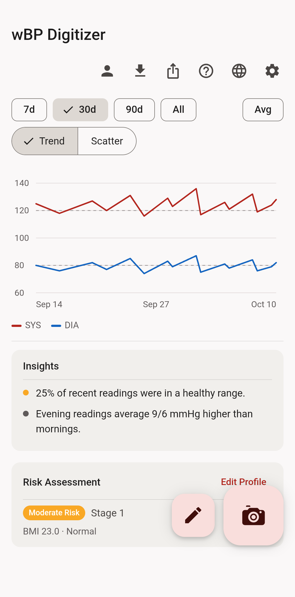
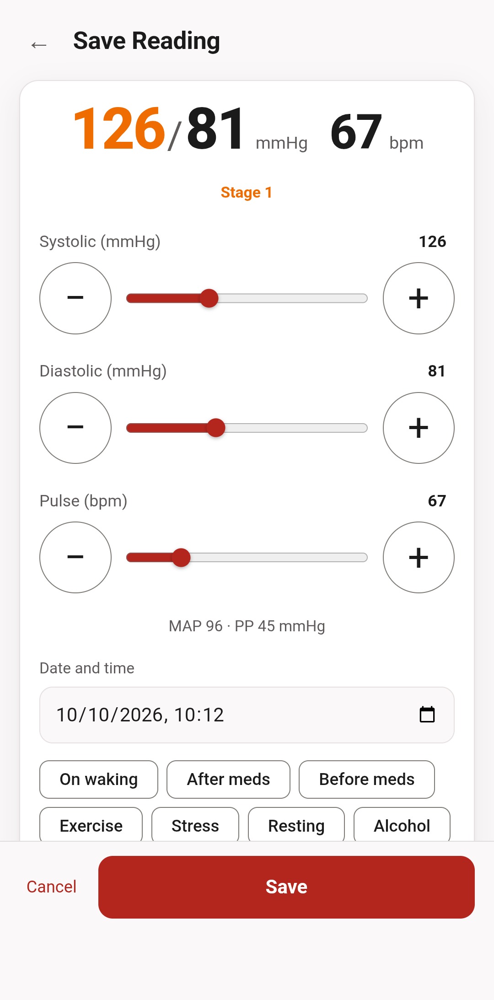
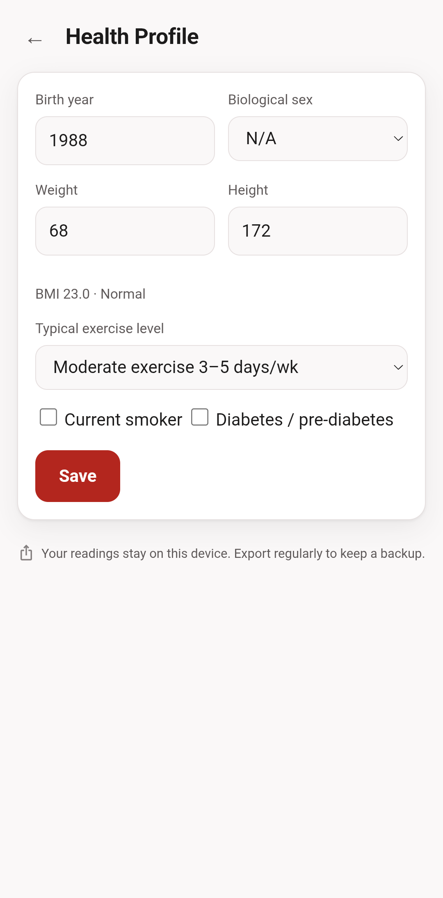
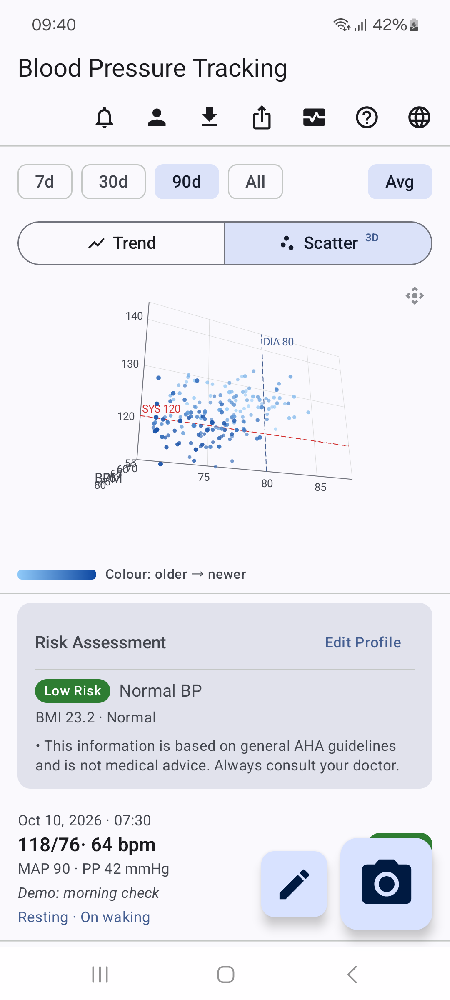
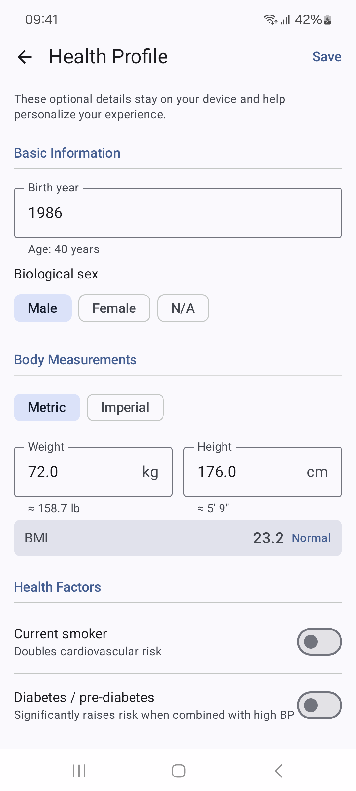
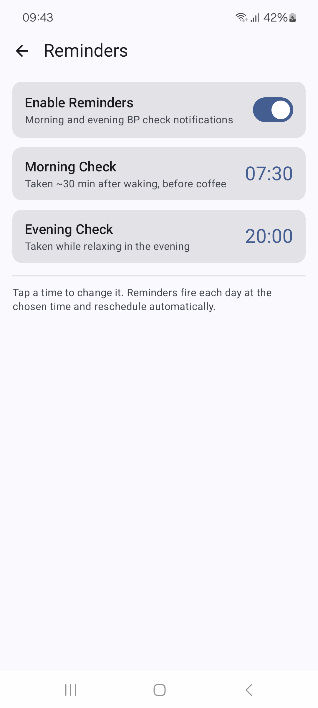
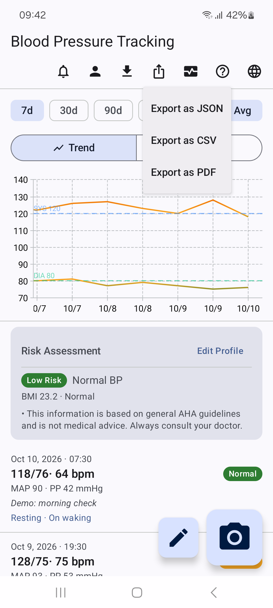
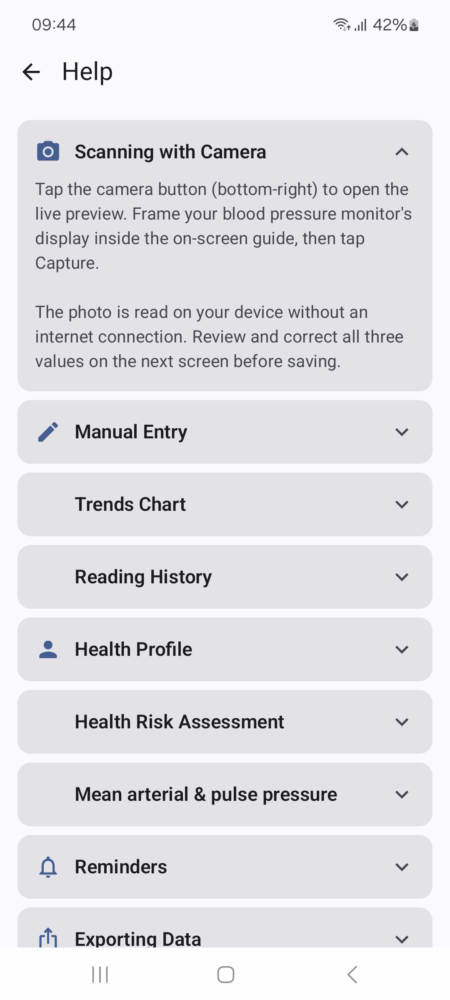

Une application. Deux façons de l'utiliser.
BP Digitizer vous aide à enregistrer vos mesures de tension artérielle, à explorer leur historique et à tenir vos propres dossiers. Utilisez l'application Android native ou ouvrez la PWA dans votre navigateur. Les deux peuvent lire votre tensiomètre avec l'appareil photo, sur votre propre appareil, et aucune ne demande de compte. La version web, auparavant présentée ici sous le nom wBP Digitizer, fait partie du même projet.
BP Digitizer pour le Web
La PWA apporte le même projet dans votre navigateur, avec la lecture par l'appareil photo, la saisie manuelle, les graphiques et les exports. Les mesures restent dans l'IndexedDB de votre navigateur, et l'application est servie par GitHub Pages, sans serveur, compte ni invitation derrière. Installez-la sur l'écran d'accueil pour l'avoir sous la main.
Vous préférez héberger l'application vous-même ? Télécharger le ZIP pour l'auto-hébergement ↗. Il contient l'application prête à héberger, les modèles OCR et le code source. Servez le répertoire site/ via HTTPS. Pour transférer les mesures vers une autre adresse web, créez une sauvegarde chiffrée dans l'ancienne application, puis restaurez-la dans la nouvelle.
Explorez la source Web sur GitHub ↗
Dans l'application Web
Toutes les mesures et les informations de profil de ces captures sont fictives.



Fonctionnalités Web
- 📱 Local d'abord & PWA : S'installe sur l'écran d'accueil et fonctionne hors ligne. Les lectures vivent dans IndexedDB de votre navigateur et ne sont jamais envoyées nulle part.
- 📷 Lecture par l'appareil photo, sur l'appareil : Pointez l'appareil photo vers un tensiomètre vertical à trois lignes, et des modèles exécutés dans votre navigateur lisent SYS, DIA et le pouls. Vous confirmez les trois valeurs avant l'enregistrement, et une photo illisible avec certitude est refusée plutôt que devinée.
- ✏️ Entrée rapide : Curseurs partant de votre dernière mesure, champs numériques et pas par appui prolongé.
- 📈 Graphiques complets : Graphique de tendance (systolique + diastolique, lignes de référence 120/80) et dispersion systolique/diastolique. Plages de 7/30/90 jours et de tous les temps.
- 🧠 Analyse intelligente : La moyenne en rafale réduit les lectures consécutives en un seul point. Informations calculées sur l'appareil (matin ou soir, temps passé à portée, séquences saines, balises contextuelles).
- 🩺 Logique clinique : Zones de l'AHA (Normale / Élevée / Stade 1 / Stade 2 / Crise), PAM et pression pulsée, IMC et une évaluation du risque à partir de votre profil de santé.
- 📄 Exportation et rapports : Import et export CSV et JSON, ainsi que des rapports PDF imprimables et téléchargeables.
- 🔐 Sauvegarde chiffrée : Sauvegardez vos mesures et votre profil dans un fichier chiffré avec votre phrase secrète, et restaurez-le sur un autre appareil. Personne ne peut récupérer une phrase secrète perdue.
- 🌐 Mondial : 12 langues, reprises de l'application Android plutôt que retraduites, avec la prise en charge de l'écriture de droite à gauche pour l'arabe.
BP Digitizer pour Android
L'application Android native lit votre tensiomètre avec l'appareil photo entièrement sur le téléphone, avec une saisie manuelle rapide, des vues de tendance, Health Connect, des exports PDF et des rappels. Elle n'a aucune autorisation d'accès à internet, et la sauvegarde cloud d'Android ainsi que le transfert d'un téléphone à l'autre sont désactivés pour elle : vos mesures restent sur votre téléphone, sauf si vous les exportez. Elle fonctionne sur les téléphones ARM64 sous Android 8.0 ou ultérieur.
Téléchargez l'APK Android signé ↗. La version comprend des instructions d'installation, des sommes de contrôle et des détails de signature. Avant de passer d'une autre version, exportez une sauvegarde JSON ; la désinstallation supprime les lectures locales et le profil.
Explorer le code source Android sur GitHub ↗
Lire la politique de confidentialité Android ↗
Dans l'application Android
Captures de la version 1.6.2. Toutes les mesures et valeurs de profil sont fictives.










Fonctionnalités Android
- 🏃 Conçu pour un mode de vie actif : La tension artérielle est une mesure essentielle du bien-être, tout comme vos pas, vos entraînements et votre sommeil. Enregistrez-le en quelques secondes et intégrez-le à la routine qui vous permet de bouger.
- ✏️ Enregistrez vos lectures gratuitement, en quelques secondes : Des curseurs rapides et faciles à toucher vous permettent de régler le pouls systolique, diastolique et en quelques instants. Entièrement gratuit, fonctionne hors ligne et ne nécessite aucun compte : commencez le suivi dès la première ouverture de l'application.
- 📷 Ou scannez avec l'appareil photo, hors ligne : Pas envie de taper ? Photographiez l'écran de votre tensiomètre, et des modèles intégrés à l'application lisent les valeurs sur votre téléphone, sans connexion internet. C'est gratuit, et vous vérifiez toujours les valeurs avant d'enregistrer.
- 📈 Surveillez vos tendances : Voyez comment vos chiffres évoluent au fil des jours, des semaines et des mois. Basculez entre une ligne de tendance et un scatter 3D que vous pouvez faire tourner avec un doigt pour explorer ensemble le pouls systolique, diastolique et. Le lissage intelligent « Avg » fusionne les lectures consécutives en un seul point de données honnête, afin que votre tendance reflète la réalité. Tournez le téléphone pour voir les deux graphiques côte à côte.
- 🏷️ Voyez ce qui fait bouger vos chiffres : Ajoutez à chaque lecture un contexte (exercice, caféine, repas salé, mauvais sommeil, stress) et découvrez comment votre activité et votre style de vie façonnent vos chiffres au fil du temps.
- ❤️ Se connecte avec Health Connect : Copiez vos mesures vers Android Health Connect depuis le tableau de bord pour garder votre tension à côté de votre activité, de vos entraînements et de vos autres données de forme. C'est facultatif et ne se produit que lorsque vous le choisissez.
- 📄 Gardez vos propres dossiers : Exportez une sauvegarde JSON, un fichier CSV ou un rapport PDF de plusieurs pages avec graphiques et mesures, et importez des sauvegardes de cette application ou de la version web.
- ⏰ Construisez une habitude cohérente : Des rappels doux en option vous aident à vous connecter à la même heure chaque matin et soir, afin que vos tendances restent complètes.
- 🔒 Privé par conception : L'application n'a aucune autorisation d'accès à internet. Pas de compte à créer, pas d'inscription dans le cloud, rien n'est vendu ni partagé. Pour garder une copie ou changer de téléphone, exportez une sauvegarde JSON. Vos chiffres ne regardent que vous.
- 🌐 12 langues : anglais, arabe, chinois, français, allemand, hindi, japonais, coréen, portugais, roumain, espagnol et ukrainien.